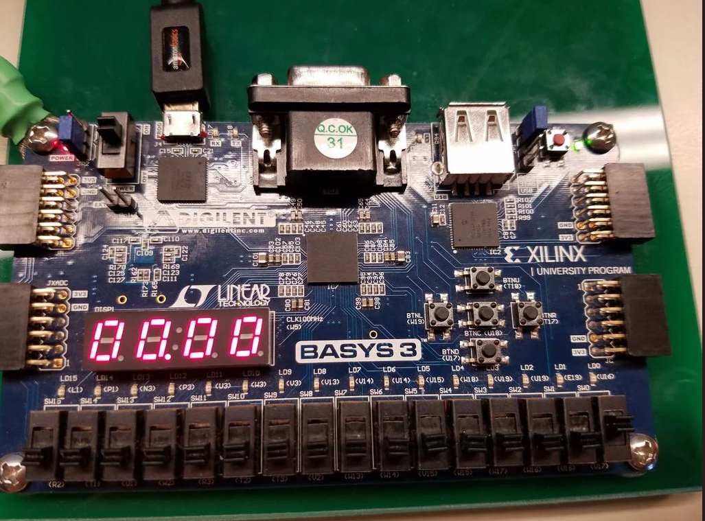
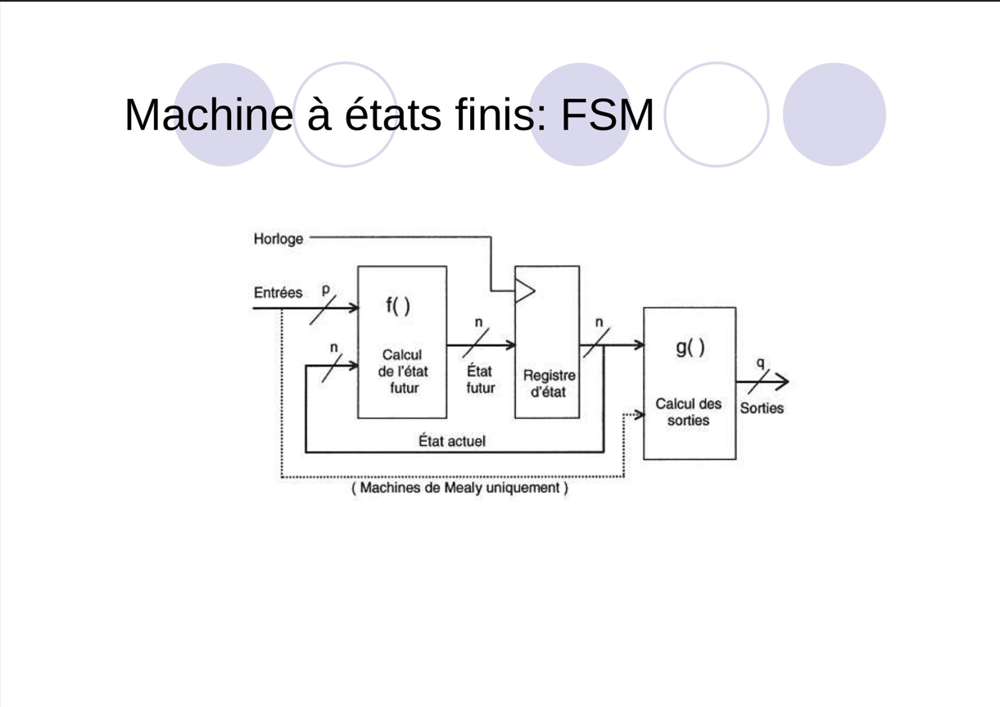
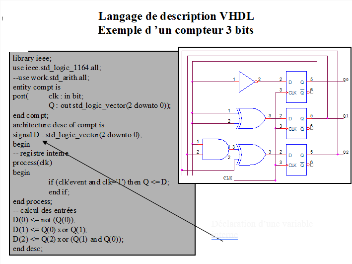

Gestion de parking en VHDL
Projet réalisé dans le cadre du BUT GEII : conception d’un système de gestion de parking sur FPGA avec le langage VHDL. Le système permet de compter les véhicules, afficher le nombre de places disponibles et bloquer l’entrée en cas de saturation.
- Comptage dynamique des entrées/sorties.
- Affichage sur afficheur 7 segments / LED.
- Simulation et validation sur FPGA.
Carte FPGA (implémentation du projet)
Implémentation matérielle sur carte FPGA pour valider le code VHDL du système de gestion de parking.
Machine à états finis (FSM)
Diagramme de la machine à états : attente → détection → affichage → blocage. Ce schéma illustre la logique séquentielle de gestion des entrées et sorties de véhicules.
Compteur 3 bits en VHDL
Exemple d’un compteur 3 bits décrit en VHDL : le code définit une architecture utilisant des bascules (D flip-flops) et de la logique combinatoire pour incrémenter/décrémenter la valeur binaire. Ce compteur permet de représenter le nombre de véhicules dans le parking sur 3 bits, soit jusqu’à 8 valeurs possibles.